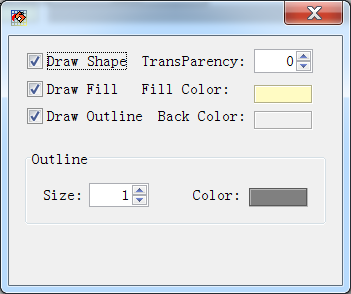
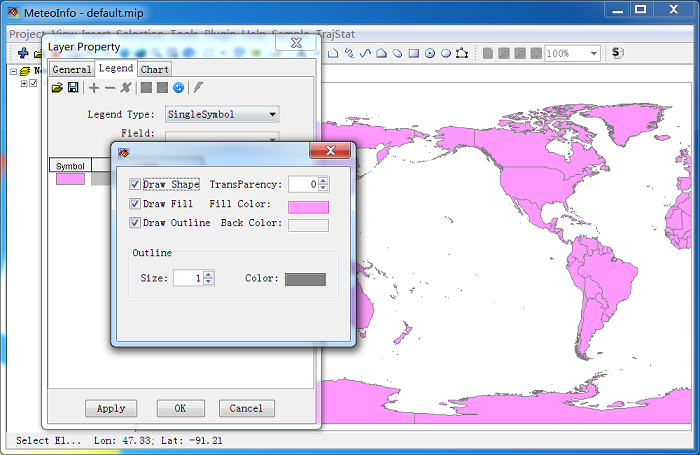

Legend Scheme¶
The visualization behavior of a layer is base on its legend scheme. The legend scheme of the layer could be edited with ‘Legend’ option in layer property dialog.

Double click the colored rectangle under ‘Symbol’ column to open a ‘Symbol Set’ dialog.
Now change ‘Fill Color’ and press ‘Apply’ button in ‘Legend Set’ dialog, the color change is viewed in map window.
Point symbol setting dialog is showed bellow. The marker types are ‘Simple’, ‘Character’ and ‘Image’.


Polyline symbol setting dialog is showed bellow.

There are three legend types in MeteoInfo.
‘SingleSymbol’. All shapes of the layer are set in one same symbol.
‘UniqueValue’. Each shape of the layer has its own symbol.
‘GraduatedColor’. The shapes are grouped according their values an each group has its own
symbol.
For example, after you change the legend type to ‘Unique Value’ and select the ‘Field’ to ‘CNTRY_NAME’. After press ‘Apply’ button, the map data will show as follow figure.

The legend setting could be saved as a legend file with .lgs extension. And the legend file could be loaded also. Under ‘UniqueValue’ and ‘GraduatedColor’ types, some tools could be used to add/remove and move the break in the legend set. The legend changes will be saved to the layer only by pressing ‘OK’ button.